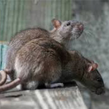
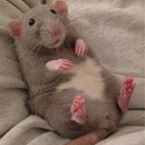
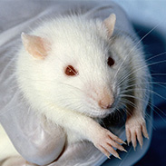

Общие сведения

Длина тела 8—30 см, длина хвоста равна длине тела или больше её, масса от 37—39 граммов (Rattus exulans) до 400—420 граммов (некоторые экземпляры серой крысы могут достигать 500 граммов). В окраске тела преобладают тёмно-серые или серо-бурые тона, однако встречаются жёлтые, красные и оранжевые оттенки. Пальцы на лапах подвижные — это компенсирует недостаточное развитие мозолей, необходимых для лазания. Широко распространены два синантропных вида — серая и чёрная крысы. Остальные виды распространены в Юго-Восточной Азии, Новой Гвинее, Австралии, на островах Малайского архипелага. Ещё один синантропный вид Rattus exulans завезён на многие острова Океании и Гавайи. Несинантропные виды крыс обитают преимущественно в тропических лесах, в том числе горных. В Австралии крысы встречаются в саваннах и на пастбищах. В ископаемом состоянии род Rattus известен со среднего плейстоцена.
В начало
Крыса как домашнее животное

Декоративные крысы — подвид и одомашненная форма серых крыс (лат. Rattus norvegicus f. domestica). Они сопровождают человека с давних времён. В XIX веке в Англии были популярны битвы крыс с терьерами, с 1856 года эти грызуны начали использоваться в лабораториях, а в наше время завоёвывают всё большую популярность в качестве «животных-компаньонов». С того момента было выведено множество разновидностей, характеризующихся особенностями шерстного покрова, общего строения, окрасов и расцветок, а также маркировок — пятен белого цвета на основном окрасе крысы, — часть из которых не стандартизована.
Средняя продолжительность жизни крыс составляет 2—3 года. Самцы весят в среднем 400—650 граммов, самки — 250—450 граммов. Самцы чаще бывают спокойные и ласковые, самки же более активные и игривые.
Не считая возможных ветеринарных расходов, затраты на уход за крысами не очень высоки.
В начало
Лабораторные крысы

Крысы являются одними из основных экспериментальных систем в биологических и медицинских исследованиях. За долгие годы были выведены специальные лабораторные крысы. Благодаря быстрому метаболизму, неприхотливости, неагрессивности они до сих пор остаются одним из основных объектов во многих отраслях биологии. На подопытных крысах в различных научных областях проводится значительное число экспериментов.
Вистар (Wistar) – аутбредные белые крысы. Эта линия была разработана Вистаровским институтом в 1906 г. для использования в биологических и медицинских исследованиях и является первой линией крыс, выведенной в качестве модельного организма в то время, когда лаборатории использовали преимущественно домовых мышей. Более половины всех лабораторных линий крыс произошли от первой популяции. На данный момент крысы Вистар являются наиболее популярными крысами в лабораторных исследованиях. Они характеризуются широкой головой, длинными ушами и имеют длину хвоста, которая всегда короче длины тела.
В начало